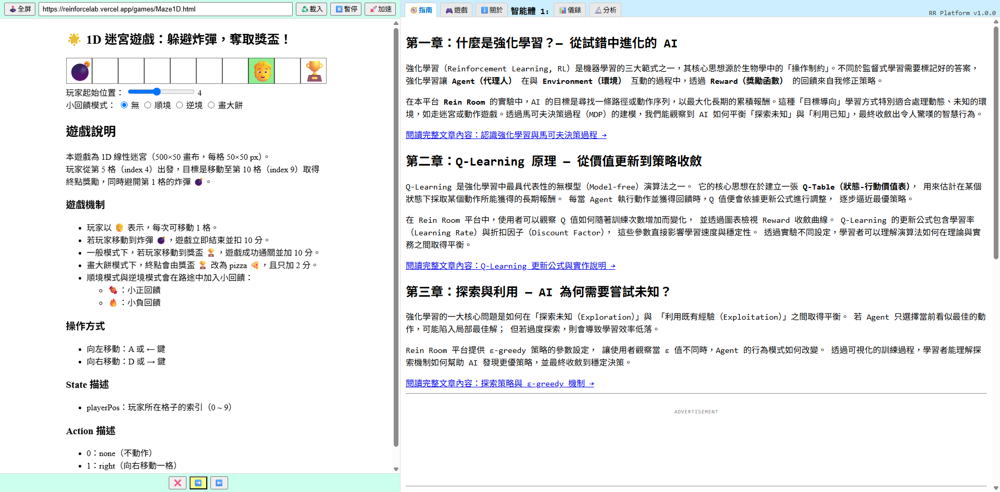
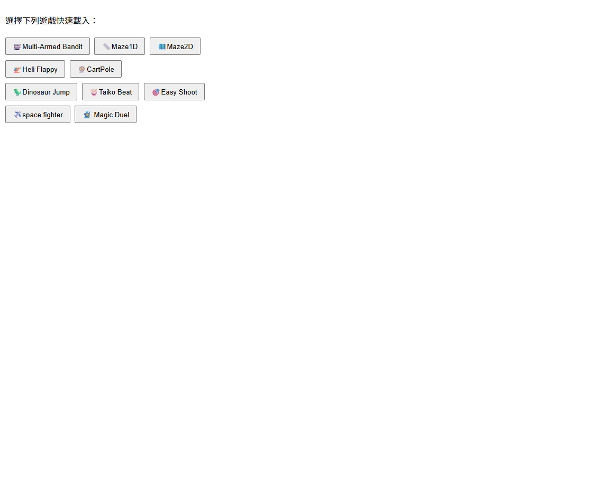
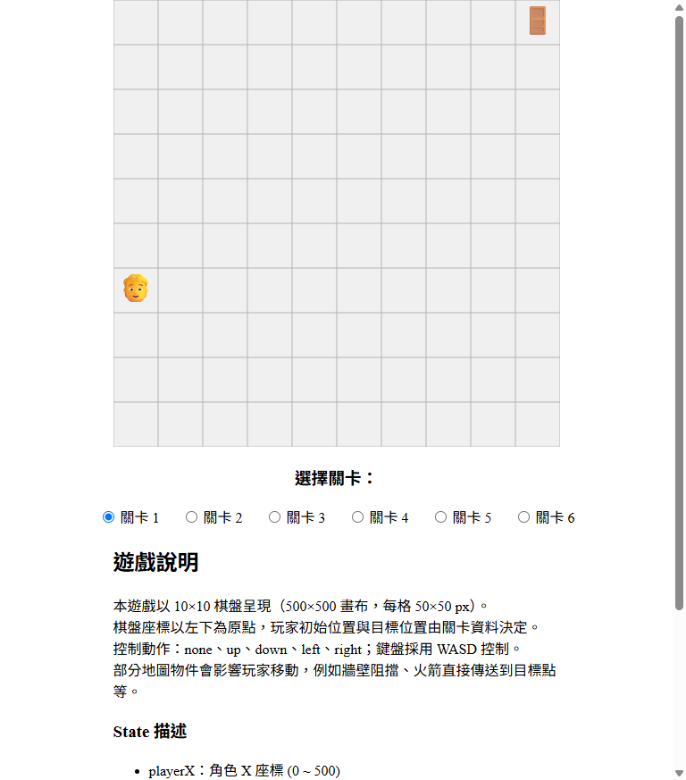
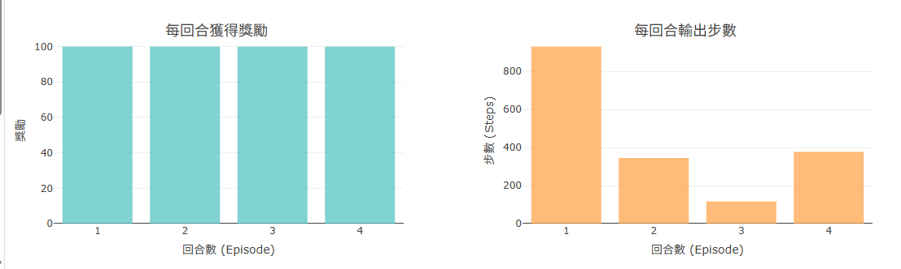
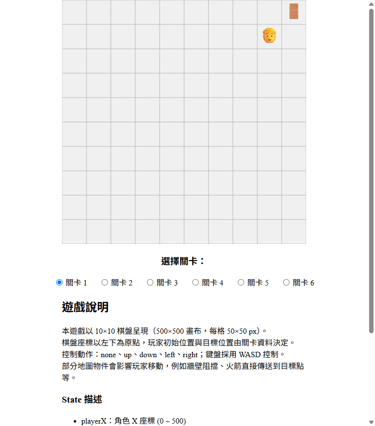
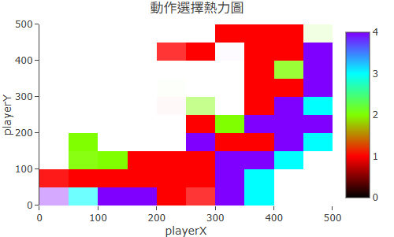

用任何現代瀏覽器開啟平台。你會看到左側的遊戲選單、中央的 iframe 遊戲畫面，以及右側的控制面板。不需要登入，也不需要安裝任何東西。

在右側面板切換到「遊戲」分頁，找到 Maze2D（二維迷宮），點擊後按下「載入」按鈕。iframe 會更新成二維格子地圖，Agent（藍色圓點）出現在起點。

載入後訓練會立刻開始，不需要按任何額外按鈕。初期 Agent 幾乎是隨機移動——這是正常現象，因為 Q-Table 剛被初始化，Agent 還沒學到任何策略。觀察它撞牆、繞遠路、找不到出口。

訓練同時在背景持續進行。切換到右側的「設定」分頁，可以看到「每回合 Reward」折線圖。此時曲線應該大幅震盪、甚至持續在負值——這代表 Agent 還在摸索，頻繁觸發懲罰。

初期 Reward 曲線：大幅震盪，Agent 還在摸索
讓訓練繼續跑，等回合計數器來到 100 回合左右，再切回遊戲 iframe。此時 Agent 的行動應該明顯變得有方向感——它會減少亂撞，開始往終點靠近。

切換到「分析」分頁，找到 Q-Table 熱力圖。顏色越亮（越偏黃白）的格子，代表 Agent 認為那個位置具有較高的長期價值。你會看到終點附近的格子明顯比其他地方亮——這就是 Agent「學到的地圖」。

收斂後的 Q-Table 熱力圖：終點附近明顯高亮
完成了第一次訓練後，試著動手改一個參數，觀察 AI 學習行為的變化：
| 操作 | 預期現象 | 背後原因 |
|---|---|---|
| 調高 ε 到 0.8，重新訓練 | Reward 曲線更不穩定，收斂變慢 | ε 越高代表越愛亂試，Agent 大部分時間在隨機探索，不依賴已學到的策略 |
| 調低 ε 到 0.05，重新訓練 | 前期提升快，但可能陷入局部最佳解 | ε 越低代表越「保守利用」，Agent 很快就依賴早期學到的策略，但可能錯過更好的路線 |
| 換遊戲：選 Maze1D | 訓練更快收斂，曲線更平滑 | 一維迷宮狀態空間最小，是最容易驗證 RL 基本原理的遊戲 |
| 換遊戲：選 CartPole | 需要更多回合才有明顯進步 | CartPole 有 4 維連續狀態，是平台中狀態空間最大、最難學的環境 |